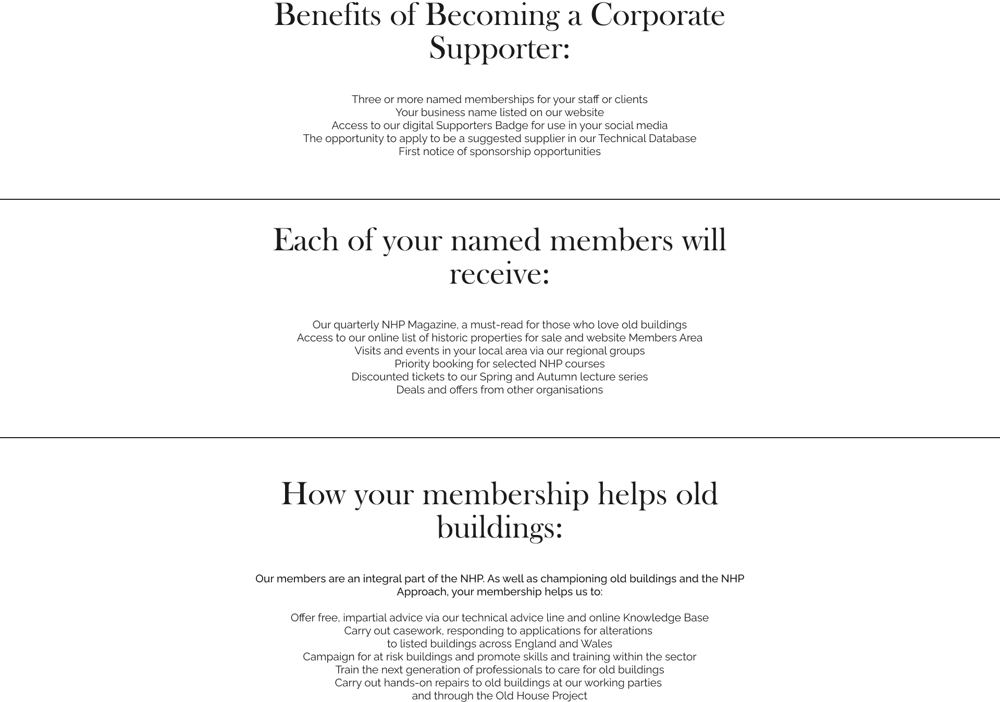

Join Us
You can help support the places you love by becoming a member, donating or giving your time as a volunteer. We hope you enjoy our site and take a moment to drop us a line.
Friend of New Heritage Foundation
You can become a Friend of New Heritage Poland for an annual subscription of 195 PLN and join
a lively and active community of like-minded individuals, keen to protect Poland's vibrant
heritage. In addition to knowing that your money goes straight to the front line of
conservation work, allowing us to campaign for the historic environment and employ dedicated
conservation advisers who travel across Poland giving expert advice on planning applications
affecting heritage buildings and gardens.
In addition you will receive:
A complimentary NHP publication when joining
NHP's biannual newsletter
Discounts on NHP publications
Priority booking and discounts on events
Access to our online library
Press releases and campaign updates
Notification of member events including lectures, walks and country visits
NHP's biannual newsletter
Discounts on NHP publications
Priority booking and discounts on events
Access to our online library
Press releases and campaign updates
Notification of member events including lectures, walks and country visits
Become a Saviour
For 800 PLN per year, you can become a Saviour of Poland's heritage, and enjoy greater
involvement with our work. In addition to knowing that your money goes straight to the front
line of conservation work, allowing us to campaign for the historic environment and employ
dedicated Conservation Advisers who travel across Poland giving expert advice on planning
applications affecting heritage buildings and gardens, you will receive:
A complimentary NHP publication when joining
NHP's biannual newsletter
Discounts on NHP publications
Priority booking and discounts on events
Access to our online library
Press releases and campaign updates
Notification of member events including lectures, walks and country visits
NHP's biannual newsletter
Discounts on NHP publications
Priority booking and discounts on events
Access to our online library
Press releases and campaign updates
Notification of member events including lectures, walks and country visits
Volunteer work
There are many projects that represent New Heritage Foundation’ key principles of
Guardianship, Discovery, Showmanship and Independence which would not have been possible
without support from donations. You can become a volunteer worker with us and gain much
interested experience. Making new friends, working in amazing places and knowing that you're
helping a great cause - three fabulous reasons to get volunteering!
Another great way to become a volunteer is to share with us any particular information of
the historic houses that need saving. Perhaps there is one in your village or on a farm or
in the middle of your town. Perhaps you know people who have stories to tell about these
houses and the people who have lived in them?
If you do, we need your help. Every story matters.
However, if you know of a house but don’t know any stories, tell us and we can try to point
you in the right direction. Perhaps you could start by asking friends and relatives what
they remember. Take some pictures and tell us what you feel about the house.
Become a Curator
If a heritage house is in your area and it needs help and protection don't hesitate to
contact with us. You can become a custos (latin) curator of the house and we will supply you
of all the know how and help you will need.
Become a Guardian
A curator is a manager or overseer. Many heritage buildings are abandoned or in a sorry
state. If you know of a heritage building near you that needs help and you don't know where
to start, contact us and we will do our best to support you. Consider becoming the voluntary
guardian of the building by providing us with a record of the building’s condition. We will
make this public, thus raising awareness of the problem.
Awareness is the first step to renovation.
Traditionally, a curator or keeper of a cultural heritage institution is a content
specialist charged with an institution's collections and involved with the interpretation of
heritage material including historical artefacts. A public-private historic preservation
program that offers the opportunity for outside parties to lease unique historic houses and
buildings. If you know a heritage building in your area that needs help and you don't know
where to start contact us and we can guide and support you. You can become the curator or
the guardian of the building. It will only require a bit of your time and we will supply the
rest. We can slow down the deteriorating process by far, through regular visits to the
buildings in need.
Adopt a house
Securing the roof and foundations is just the beginning of the house restoration process. The
challenging and enjoyable task of returning the interiors to their former glory still lies
ahead. Here is where you can make a personal impact. Adopt a room, a corridor or even a
staircase and watch, in the comfort of your home, as your donation helps to bring the space
back to life. Receive regular video updates of the progress and have the opportunity to talk
to the restorers during their painstaking work. Your contribution to the restored space will
be recognised with a bronze plaque bearing your name, linking you to the house in
perpetuity.
Now what you need to do is to choose a house from our portfolio or contact us directly below
for any further information.
As a charity we need your help to protect the Poland's best-loved places in our care, to ensure they
remain special for everyone. You can support our valuable conservation work as a charity in many ways.
From making a general donation to supporting an appeal, or even taking part in one of our raffles, we
greatly appreciate anything you can give during this particularly difficult time. Membership and visitor
income makes a vital contribution to the upkeep of the amazing places you love, but we rely on your
additional generosity to continue to protect the irreplaceable. In our beginnings, we need you now more
than ever.
We are at the start of our mission. We are gathering the support of people whose wide range of expertise
will enable us to carry through our mission. But, we need your support to enable this work to begin,
work that will preserve our shared heritage. You can play a vital role through reporting details of a
house in need, suggesting ideas for its preservation, making a donation.
Help Our Cause
Your support and contributions will enable us to meet our goals
and improve conditions. Your
generous donation will fund our mission
Corporate supporters
We are working to develop lasting relationships with companies who are excited about the work that we do and where we feel that a positive contribution to both brands can be made. By associating with the NHP we can offer your firm a number of exciting sponsorship opportunities, including major events and publications; a platform to speak to our audiences; and benefits for your staff and clients.
As a NHP Corporate Partner we can also help you to meet your companies CSR aspirations.
We will work with you to create a unique partnership package that meets the needs of your firm.
To find out more please contact us.
Corporate supporters
Bring all the benefits of NHP membership to your employees, in the knowledge that you are enhancing your employment offer, providing them with valuable access to professional development and publicly lending your organisation's support to the work of the NHP.
Our Corporate Supporters are like minded charities, small companies and large firms who are an active part of the building conservation sector. We can help you to offer NHP membership as a benefit to you and your employees. You don't have to be a big firm to take part, we recognise that many providers of building conservation skills are small organisations. Just three memberships is all you need to get started. As a thank you we will list your organisation's name on our website and those offering more than three memberships to their staff will qualify for a discount.